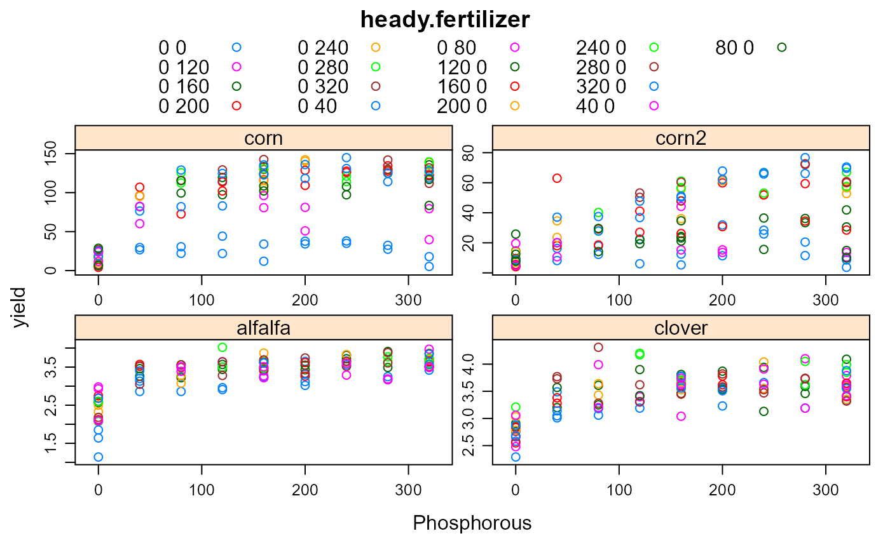

heady.fertilizer.RdYield of corn, alfalfa, clover with two fertilizers
data("heady.fertilizer")
A data frame with 81 observations on the following 3 variables.
cropcrop
repreplicate (not block)
Pphosphorous, pounds/acre
Kpotassium, pounds/acre
Nnitrogen, pounds/acre
yieldyield
Heady et al. fit two-variable semi-polynomial response surfaces for each crop.
Clover and alfalfa yields are in tons/acre. The clover and alfalfa experiments were grown in 1952.
Corn yields are given as bu/acre. The corn experiments were grown in 1952 and 1953. The same test plots were used in 1953 and in 1952, but no fertilizer was applied in 1953--any response in yield is due to residual fertilizer from 1952.
All experiments used an incomplete factorial design. Not all treatment combinations were present.
Earl O. Heady, John T. Pesek, William G. Brown. (1955). Crop Response Surfaces and Economic Optima in Fertilizer Use. Agricultural Experiment Station, Iowa State College. Research bulletin 424. Pages 330-332. https://lib.dr.iastate.edu/cgi/viewcontent.cgi?filename=12&article=1032&context=ag_researchbulletins&type=additional
Pesek, John and Heady, Earl O. 1956. A two nutrient-response function with determination of economic optima for the rate and grade of fertilizer for alfalfa. Soil Science Society of America Journal, 20, 240-246. https://doi.org/10.2136/sssaj1956.03615995002000020025x
library(agridat) data(heady.fertilizer) dat <- heady.fertilizer libs(lattice) xyplot(yield ~ P|crop, data=dat, scales=list(relation="free"), groups=factor(paste(dat$N,dat$K)), auto.key=list(columns=5), main="heady.fertilizer", xlab="Phosphorous")# Corn. Matches Heady, p. 292 d1 <- subset(dat, crop=="corn") m1 <- lm(yield ~ N + P + sqrt(N) + sqrt(P) + sqrt(N*P), data=d1) summary(m1)#> #> Call: #> lm.default(formula = yield ~ N + P + sqrt(N) + sqrt(P) + sqrt(N * #> P), data = d1) #> #> Residuals: #> Min 1Q Median 3Q Max #> -39.486 -8.091 1.188 9.740 30.194 #> #> Coefficients: #> Estimate Std. Error t value Pr(>|t|) #> (Intercept) -5.69442 6.62729 -0.859 0.392 #> N -0.31622 0.03996 -7.913 2.35e-12 *** #> P -0.41749 0.03996 -10.447 < 2e-16 *** #> sqrt(N) 6.35320 0.86815 7.318 4.70e-11 *** #> sqrt(P) 8.51766 0.86815 9.811 < 2e-16 *** #> sqrt(N * P) 0.34096 0.03854 8.847 1.92e-14 *** #> --- #> Signif. codes: 0 '***' 0.001 '**' 0.01 '*' 0.05 '.' 0.1 ' ' 1 #> #> Residual standard error: 13.57 on 108 degrees of freedom #> (48 observations deleted due to missingness) #> Multiple R-squared: 0.9181, Adjusted R-squared: 0.9143 #> F-statistic: 242.2 on 5 and 108 DF, p-value: < 2.2e-16 #># Alfalfa. Matches Heady, p. 292. Also Pesek equation 3, p. 241 d2 <- subset(dat, crop=="alfalfa") m2 <- lm(yield ~ K + P + sqrt(K) + sqrt(P) + sqrt(K*P), data=d2) summary(m2)#> #> Call: #> lm.default(formula = yield ~ K + P + sqrt(K) + sqrt(P) + sqrt(K * #> P), data = d2) #> #> Residuals: #> Min 1Q Median 3Q Max #> -0.73355 -0.16627 0.01388 0.15149 0.61572 #> #> Coefficients: #> Estimate Std. Error t value Pr(>|t|) #> (Intercept) 1.8735521 0.1222501 15.326 < 2e-16 *** #> K -0.0013943 0.0007371 -1.891 0.061237 . #> P -0.0050195 0.0007371 -6.810 5.74e-10 *** #> sqrt(K) 0.0617458 0.0160142 3.856 0.000196 *** #> sqrt(P) 0.1735383 0.0160142 10.837 < 2e-16 *** #> sqrt(K * P) -0.0014402 0.0007109 -2.026 0.045237 * #> --- #> Signif. codes: 0 '***' 0.001 '**' 0.01 '*' 0.05 '.' 0.1 ' ' 1 #> #> Residual standard error: 0.2502 on 108 degrees of freedom #> (48 observations deleted due to missingness) #> Multiple R-squared: 0.7732, Adjusted R-squared: 0.7627 #> F-statistic: 73.64 on 5 and 108 DF, p-value: < 2.2e-16 #>## Coefficients: ## Estimate Std. Error t value Pr(>|t|) ## (Intercept) 1.8735521 0.1222501 15.326 < 2e-16 *** ## K -0.0013943 0.0007371 -1.891 0.061237 . ## P -0.0050195 0.0007371 -6.810 5.74e-10 *** ## sqrt(K) 0.0617458 0.0160142 3.856 0.000196 *** ## sqrt(P) 0.1735383 0.0160142 10.837 < 2e-16 *** ## sqrt(K * P) -0.0014402 0.0007109 -2.026 0.045237 * # Clover. Matches Heady, p. 292. d3 <- subset(dat, crop=="clover") m3 <- lm(yield ~ P + sqrt(K) + sqrt(P) + sqrt(K*P), data=d3) summary(m3)#> #> Call: #> lm.default(formula = yield ~ P + sqrt(K) + sqrt(P) + sqrt(K * #> P), data = d3) #> #> Residuals: #> Min 1Q Median 3Q Max #> -0.57245 -0.16915 -0.02067 0.14439 0.69123 #> #> Coefficients: #> Estimate Std. Error t value Pr(>|t|) #> (Intercept) 2.4698101 0.1133703 21.785 < 2e-16 *** #> P -0.0039131 0.0007097 -5.514 2.38e-07 *** #> sqrt(K) 0.0266867 0.0086756 3.076 0.00265 ** #> sqrt(P) 0.1272024 0.0154128 8.253 3.92e-13 *** #> sqrt(K * P) -0.0009570 0.0006859 -1.395 0.16578 #> --- #> Signif. codes: 0 '***' 0.001 '**' 0.01 '*' 0.05 '.' 0.1 ' ' 1 #> #> Residual standard error: 0.2415 on 109 degrees of freedom #> (48 observations deleted due to missingness) #> Multiple R-squared: 0.644, Adjusted R-squared: 0.631 #> F-statistic: 49.3 on 4 and 109 DF, p-value: < 2.2e-16 #># Corn with residual fertilizer. Matches Heady eq 56, p. 322. d4 <- subset(dat, crop=="corn2") m4 <- lm(yield ~ N + P + sqrt(N) + sqrt(P) + sqrt(N*P), data=d4) summary(m4)#> #> Call: #> lm.default(formula = yield ~ N + P + sqrt(N) + sqrt(P) + sqrt(N * #> P), data = d4) #> #> Residuals: #> Min 1Q Median 3Q Max #> -27.349 -6.885 -1.070 6.857 38.863 #> #> Coefficients: #> Estimate Std. Error t value Pr(>|t|) #> (Intercept) 18.31681 5.09183 3.597 0.000487 *** #> N 0.09482 0.03070 3.088 0.002558 ** #> P -0.04405 0.03070 -1.435 0.154262 #> sqrt(N) -2.10479 0.66701 -3.156 0.002076 ** #> sqrt(P) 0.23531 0.66701 0.353 0.724935 #> sqrt(N * P) 0.21933 0.02961 7.407 3.01e-11 *** #> --- #> Signif. codes: 0 '***' 0.001 '**' 0.01 '*' 0.05 '.' 0.1 ' ' 1 #> #> Residual standard error: 10.42 on 108 degrees of freedom #> (48 observations deleted due to missingness) #> Multiple R-squared: 0.7709, Adjusted R-squared: 0.7603 #> F-statistic: 72.7 on 5 and 108 DF, p-value: < 2.2e-16 #>libs(rgl) with(d1, plot3d(N,P,yield)) with(d2, plot3d(K,P,yield)) with(d3, plot3d(K,P,yield)) with(d4, plot3d(N,P,yield)) # Mostly linear in both N and P rgl.close()